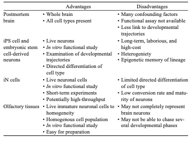
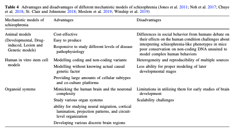
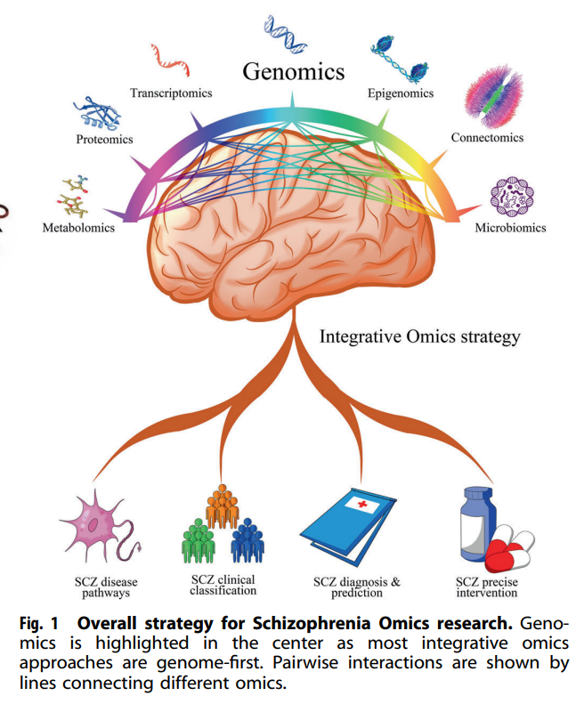

31 세포주 모델과 전산화 모델
31.1 전임상 생체 외 연구
역 중개 연구1란 임상에서 얻은 아이디어를 실제 생리학적 메커니즘으로 재확인하는 과정이다. 다시 말하여 환자들을 대상으로 관찰된 현상을 동물 모델에서 재현하고, 이어서 모델에 쓰인 동물의 생체 조직을 얻어 행동 변화를 일으키는 세포 내외의 변화를 찾아내는 과정이라 할 수 있다. 여기서 후자의 단계를 생체 외 연구(In vitro study)라고 하며, 주로 세포 내 신호전달계, 세포 외 환경변화와 유전자의 관계 등을 연구한다. 이를 위해서는 인간의 신경세포를 충실히 재현하는 실험 모델이 필요하게 되는데, 이를 얻기 위해 다양한 방법들이 개발되어왔다.
1 전임상 동물 모델에서 얻은 결과를 임상에 적용하는 연구를 중개 연구(translational research)라고 한다. 이에 비해 임상에서 얻은 경험적 지식을 전임상 모델 개발에 응용하는 것을 역 중개 연구(back-translational research)라고 한다.
31.1.1 후각 세포 채집
살아있는 인간 뇌 조직을 떼어내어 실험에 사용할 수는 없지만, 지난 수십년 동안 연구자들은 비강(nasal cavity)에서 채집한 후각 상피 세포2를 뇌 조직 대신 사용해왔다. 예전에는 생검 후 출혈이나 후각 손상이 빈번하여 잘 활용되지 않았으나, 안전한 생검 기법이 도입된 이후로는 좀더 활발히 사용되고 있다.[1]
2 후각 상피 (olfactory epithelium): 인간의 비강을 덮고 있는 약 9cm2 넓이의 상피이다. 여기에는 후각을 담당하는 신경세포 말단이, 이를 지탱하는 지지 세포 사이에 분포하고 있다. 이렇듯 신경세포가 직접 체외로 노출되어 있는 것 외에도, 평생 분열과 증식을 계속한다는 것도 큰 특징이다. 후각 상피에는 basal cell이라는 일종의 줄기 세포가 있으며, 이는 신경세포 혹은 지지세포로 분화한다.
조현병 환자와 그 가족 중에는 후각 기능이 떨어져 있는 사람이 많고, 후각 기능의 손상은 음성 증상과 비례한다.[2] 줄기세포와의 차별점이라면 발달 과정 중에 있는 줄기세포와는 달리, 발달 과정을 끝낸 성숙한 신경세포의 이상을 조사할 수 있다는 점이다.[3] 더불어 후각 상피는 성인이 된 후에도 여전히 분열, 증식하는 유일한 신경세포인데다가 채집 방법이 쉽기 때문에, 오래된 기술임에도 불구하고 여전히 중요한 연구 기법으로 인정받는다.[4]
31.1.2 신경 세포주
세포주(cell line)란 하나의 암세포를 조심스럽게 배양하여 스스로 증식할 수 있는 클론3으로 성장시킨 것으로, 외부에서 영양 물질을 공급해주기만 한다면 영원히 죽지 않는다. 이 세포들은 모두 유전자 구성이 동일하기 때문에, 실험결과를 통제하거나 재현하는데 유리하다. 정신의학 연구를 위해서는 신경세포의 특성을 최대한 많이 지닌 세포주를 사용해야 하는데, 가장 널리 사용되는 것은 SH-SY5Y 세포주4이다. SH-SY5Y 세포는 도파민을 비롯한 단가 아민 신경전달물질을 생성하고, 수상돌기 간극을 자라나게 하는 등 신경세포의 특성을 많이 지니고 있어서 항정신병 약물의 최초 선별에 널리 사용된다.[5]
3 클론 (clone): 여기서는 동일한 유전적 정보를 지닌 세포 집합을 의미한다.
4 SH-SY5Y 세포주: 신경아세포종(neuroblastoma)를 앓고 있던 환자의 골수에서 채취된 암세포 중에서 특별히 신경세포의 특성을 가장 많이 띤 세포를 골라 불멸화시킨 세포주이다.1978년에 처음 발표되었다. 전세계 모든 연구실에서 사용되는 SH-SY5Y 세포주는 모두 이 세포주의 자손이다.
31.1.3 일차 세포 배양
신경 세포주는 불멸이라 배양하기는 쉽지만, 여전히 암세포이기 때문에 실제 신경세포와 차이가 크다. 따라서 좀더 신경세포의 독특한 특성을 연구하고 싶다면, 쥐의 해마 혹은 대뇌 피질에서 신경세포를 채집한 후 이를 직접 배양하여 사용한다. 이를 일차 세포 배양(primary cell culture)이라고 하는데, 이렇게 얻은 세포주는 세포내 변화뿐 아니라 세포의 분화, 시냅스 형성 및 구조변화 등 발달과정을 연구하는데 이용된다. 또한 약물 효과는 물론 독성에 대해서도 연구할 수 있을 정도로 정교하다.[6]
하지만 애초에 살아있는 신경 세포를 채집하기가 힘들고, 얻어진 세포를 죽이지 않고 키우는 것도 쉽지 않다. 게다가 전세계 공통으로 쓰이는 세포주와는 달리 채집된 원천에 따라, 배양 조건에 따라, 실험실에 따라 특성이 천차만별이기 때문에, 얻어질 실험결과를 일반화하기 어렵다.
천신만고 끝에 신경세포를 키우는데 성공했다고 해도, 분열하지 않기 때문에 조만간 죽게 되고, 실험을 계속하려면 또 다시 채집/배양 과정을 되풀이 해야만 한다. 이를 극복하기 위해, 출산 전이나 출산 직후의 뇌에서 배아 줄기 세포(embryonic stem cell)을 얻어 키우는 방법이 도입되었다. 얻어진 세포를 적합한 환경에서 키우면 신경세포로 분화되며, 이후 다양한 실험을 할 수 있는 세포주가 얻어진다.[6]
31.1.4 유도 만능 줄기 세포 모델
일차 세포 배양에서와 같이 성체에서 신경조직을 얻어 배양하는 것은 제대로 키우기 어려울 뿐더러, 개체의 발달 과정에서 벌어지는 현상을 연구하기에 적합하지 않다. 배아 줄기 세포를 얻어 키우기도 하지만, 이는 윤리적 문제때문에 동물에서나 가능하다. 물론 인간 태아의 탯줄로부터 줄기 세포를 얻는 방법도 고려할 수 있지만, 성인이 되어 조현병이 발병하게될 태아를 미리 찾아낼 방법이 없다. 이러한 한계를 극복하는 기술이 성인의 체세포를 역분화시켜 줄기 세포를 얻는 것이다. 조현병 환자로부터 체세포를 얻어내어 역분화시킨다면, 유전적 취약성을 지니고 있는 줄기세포가 발달 과정 중에 어떤 이상을 보이는 지 재현할 수 있을 것이다. 이러한 기술을 유도 만능 줄기 세포 (iPSC)5라고 하며, 2006년 Yamanaka6에 의해 개발되었다.[7]
5 유도 만능 줄기 세포 (induced pluripotent stem cell, iPSC): 성인에게서 얻어진 체세포에 역분화를 일으키는 특수한 유전자를 도입한 후 발현시키거나, 특수 유전자로부터 유도된 단백질을 체세포에 주입하여 만들어낸다. 어떤 유전자가 이러한 특수한 성질을 지니는 지 찾아내는 것이 관건이다.
6 Shinya Yamanaka (1962~ ): 일본 교토 대학 교수로 역분화 줄기 세포 기술을 개발한 공로로 2012년 노벨 생리의학상을 수상하였다. 그가 발견한 4개의 유전자(Myc, Oct3/4, Sox2, Klf4)를 Yamanaka factors라고 부른다.
조현병에 iPSC 기술을 최초로 응용한 연구는 2011년에 발표되었다.[8] 연구자들은 환자 및 대조군으로부터 상피세포를 얻어 iPSC로 역분화시킨 후, 신경 조직으로 분화하는 과정을 세밀히 관찰함으로써 두 군 간의 차이를 탐색했다. 더불어 분화의 중간 과정에 항정신병 약물을 투여함으로써 치료 가능성 역시 살펴보았다. iPSC는 신경세포 뿐 아니라 이를 지탱하는 신경교세포로도 분화하기 때문에 그럴듯한 뇌조직으로 발달해나간다. 이를 통해 3차원적 구조의 변화는 물론, 신경섬유가 뻗어나가는 경로도 연구할 수 있다.[9] 한편 mRNA 전사량을 측정하면, 각 발달과정에서 주요 단백질들이 어떻게 양적으로 변화하는 지 시계열 자료를 얻어낼 수도 있으며[10], iPSC의 유전자 프로파일을 인위적으로 조작함으로써 특정 유전자의 기능을 좀더 확실히 밝혀낼 수 있다.[11]
이렇듯 iPSC는 무궁무진한 가능성을 지니고 있지만 단점이 없는 것은 아니다. 개개인의 유전적 프로파일을 반영한다는 것은 장점이긴 하지만, 결과를 일반화할 수 없다는 것은 일차 세포 배양과 마찬가지이다. 또한 신경교세포까지는 분화하지만, 희소돌기아교세포로는 분화가 이루어지지 않기 때문에 수초화 단계가 진행되지 않는다. 즉 아무리 기다려도 태아 수준에 머물러있기 때문에, 청소년기 이후에 발병과정이 어떻게 이루어지는지를 확인하기는 어렵다.[10]
31.1.5 직접 세포 전환
iPSC는 일단 성체 세포를 만능 줄기 세포로 역분화시켰다가, 다시 원하는 세포로 분화시키는 간접 프로그래밍(indirect programming) 방법을 사용한다. 이 과정은 무척 복잡할 뿐 아니라, 중간에 소실되는 세포가 많아 효율이 무척 떨어진다. 만약 성체 세포를 iPSC라는 중간 과정없이 직접 신경 세포로 전환시킨다면 훨씬 효율을 높이고 수고도 줄 것이다.
2000년대 중반 연구자들은 C/EBP7이라는 전사 인자를 주입함으로써 성숙한 T/B 세포를 대식구(macrophage)로 전환시키는데 성공하였다.[12] 이런 방법을 직접 프로그래밍(direct programming) 혹은 직접 세포 전환(direct cell conversion)이라 한다. 연구가 거듭되면서, 사용하는 전사 인자의 종류에 따라 서로 다른 세포로 전환시킬 수 있다는 것이 밝혀졌다. 급기야 2010년에는 섬유아세포를 심근세포로 전환시키는데 성공했으며[13], 2012년에는 이렇게 만들어진 심근세포를 살아있는 쥐에 이식하는데도 성공하였다.[14]
7 CCAAT/enhancer-binding proteins (C/EBP)
이 무렵에는 전사인자를 외부에서 주입해주어야 했으나, microRNA 기술이 도입된 이후에는 세포내에 microRNA를 주입하여 목적한 전사인자를 발현시키는 식으로 프로그래밍이 이루어졌다. Yoo 등[15]은 microRNA를 써서 인간 섬유아세포를 신경세포로 전환하는데 성공하였다.
직접 프로그래밍 기법은 연구는 물론이거니와 치료적으로도 중요한 의미가 있다. 심근경색이나 뇌졸중처럼 원래는 재생될 수 없는 조직이 파괴된 경우, 직접 프로그래밍을 시도하여 손상 부위에서 새로운 세포들이 자라날 수 있도록 유도한다. 한편 역분화 과정을 겪지 않기 때문에, 세포가 갖고 있는 유전자 정보뿐 아니라 출생 후 경험을 통해 획득한 후성유전학적(epigenetic) 특질까지 고스란히 복제할 수 있다. 이는 유전자와 환경의 상호작용으로 발병하는 정신질환을 연구하는데 매우 매력적인 부분이다. iPSC보다 좀더 성숙한 뇌조직을 만들어낼 수 있는지는 아직 확실하지 않지만, 가능성은 남아있다.[16]
직접 세포 전환 기술은 아직 초보 단계에 머물러 있다. iPSC보다 나아졌다고 하지만 복잡하고 정교한 과정이 필요하며, 전환의 성공률도 낮은 편이다. 한편 iPSC와는 달리 증식하지 않기때문에 뇌 오가노이드8를 만들 수 없다.
8 뇌 오가노이드 (cerebral organoid): Jürgen Knoblich를 비롯한 오스트리아 연구진은 2013년 소두증을 가진 환자로부터 iPSC를 배양한 후 이를 정교하게 분화시켜, 약 4~5mm 정도의 뇌 유사 구조물을 키우는데 성공하였다.[17] 이를 brain organoid 혹은 cerabral organoid라고 한다.


From 33387152
31.2 전산화 모델 및 시스템 생물학
31.2.1 시스템 생물학
과학 연구는 거대한 환원론적 패러다임(reductionist paradigm)에 의지하여 한 발자국씩 나아간다. 현상을 나누고 또 나누어서, 더 이상 나눌 수 없는 세부사항을 연구 대상으로 삼아 이해하고자 하며, 세부사항에 대해 얻어진 퍼즐 조각을 모두 한데 합치면 전체 현상에 대한 큰 그림을 그릴 수 있을 것이라고 기대한다.[19] 그런데 문제는 단편적인 지식들을 아무리 모아도 전체적 현상을 이해하기 어렵다는 것이다. 게다가 점점 더 전문화된 영역으로 시야를 좁히려는 연구자들의 성향때문에, 전체를 바라보기는 점점 더 어렵게 되었다. 그러나보니 정신의학에서도, 분자 수준의 정교한 신경생물학적 지식이, 거시적인 인간 행동이나 심리, 그리고 사회 현상을 이해하는데는 아무런 도움을 주지 못한다는 비판이 고개를 들게 되었다.[20]
이러한 한계를 극복하기 위해서는 가장 아래 단계인 유전자로부터 가장 윗 단계인 정신병리나 역학에 이르기까지 서로 다른 층위의 계층적 자료를 통합할 수 있는 새로운 관점이나 방법론이 필요하다.[21] 개개 요소의 성질을 파헤치는 것도 중요하지만, 그만큼 중요한 것은 이들이 한데 모여 이루어내는 동역학적 효과를 이해하는 것이다. 복잡계적 이해의 틀, 혹은 시스템적 시각이 필요해지는 것은 바로 이 떄문이다.[22–24]
시스템 생물학(system biology)이란 생명 현상을 복합체(complex system)가 발휘하는 기능으로 규정하고, 현상의 서로 다른 층위를 다루는 의학, 생물학, 수학, 물리학, 화학 등을 종합적으로 사용하여, 거시적 현상에 가장 근접한 모델을 세우는 것을 목표로 한다. 환원적 이해의 틀에서는 “분자 A는 B라는 기능을 한다”라는 묘사에서 멈추는 반면, 시스템 생물학에서는 서로 다른 기능을 갖는 요소들이 상호작용하면서 발현시키는 평형 상태와 그 시간적 변화를 수학적 모델로 기술하려 한다. 그러다보니 미분 방정식을 이용한 동역학(dynamics)에 대한 이해가 필연적으로 요구되며, 수학 및 컴퓨터 공학을 이용한 모델링과 시뮬레이션이 중요하게 다루어진다.[25]
시스템 생물학의 개념은 오래 전부터 정립되어 있었으나, 인간 게놈 프로젝트를 통하여 방대한 데이터가 얻어진 이후 본격적으로 각광을 받기 시작하였다.[26] 게놈 프로젝트를 계기로 세포 수준에서의 자동화 분석 기술이 한차원 높은 단계로 약진하였고, 유전체(genome) 뿐 아니라, 전사체(transcriptome), 단백체(proteome), 대사체(metabolome)에 대한 정보가 축적되기 시작하였다.[27] 이들을 다루는 소위 Omics 학문들은, 하나의 세포가 담고 있는 완전한(complete) 정보를 추적하며, 이를 통해 세포의 기능을 미시적으로부터 거시적 수준까지 이해하고 재현하고자 한다. 이렇게 얻어진 지식은 맞춤의학(personalized medicine) 및 정밀의학(precision medicine)을 실현하는 밑거름이 될 것으로 기대된다.[28–30]

31.2.2 맞춤의학과 정밀의학
맞춤의학(personalized medicine)은 개인의 유전체 혹은 기타 omics 정보를 이용하여, 그 사람에게 가장 적합한 치료를 선택하는 것을 목표로 삼는다.[32] 거의 흡사한 분야인 정밀의학(precision medicine)은 개개인에게 적합한 치료를 찾아낸다는 의미에서 맞춤의학과 지향하는 바는 같지만, 좀더 전산화, 정보화에 의지한다는 미묘한 차이가 있다. 2015년 미국 국립보건원은 “Precision Medicine Initiative”라는 연구 프로그램을 발족하였다.[[33]]9 한해에 쏟아지는 생물학적 정보의 양은 이미 기상학, 천문학에서 얻어지는 정보보다도 방대해졌기 때문에, 전산화, 정보화의 비중이 강조될 수 밖에 없다. 그야말로 세포 하나에서 얻어지는 정보를 처리하고자 해도, 슈퍼 컴퓨터 및 컴퓨터 클러스터를 동원한 고성능 컴퓨팅(high performance computing, HPC)에 의지할 수 밖에 없다.[35]
9 당시 미국 대통령 Obama는 이 프로그램을 이끌 수장으로 생물학자가 아니라 반도체 제조 회사인 인텔에서 경력을 쌓은 Eric Dishman을 임명하였다. 이는 정밀의학이 가능해지려면 방대한 자료를 해석할 수 있는 정보화 시스템의 구축이 무엇보다 필요하다는 인식때문이었을 것이다.[34]
정신의학 역시 이러한 거대한 흐름에서 예외가 될 수 없다. 정신현상은 언뜻 다지털 정보와 가장 거리가 먼 듯이 보이지만, 오히려 다른 생리 현상에 비해 훨씬 더 고차원적이고 고려되어야할 정보량이 많기 때문에 더욱 방대한 연산 능력이 필요하다. 더욱이 최근들어 딥 러닝과 인공지능에 대한 관심이 급속히 늘어나면서, 인공지능을 통해 얻은 통찰을 정신현상을 이해하는데 사용할 수 있으리라는 기대가 커지고 있다. 이런 환경적 변화와 시대적 요청에 의해 태어난 학문 분야가 계산 정신의학(computational psychiatry)이다.[36] 이는 또 하나의 전임상적 실험 기법으로, 발병 기전 이해 및 약물 개발에 있어서 조금씩 역할을 키워나가고 있다. 계산 정신의학의 개념을 살펴보기 전에 이를 가능하게 한 환경적 변화에 대해 조금 더 살펴보고자 한다.
31.2.3 정보 축적과 데이터베이스의 구축
인간 게놈 프로젝트는 차세대 염기서열 분석(Next Generation Sequencing, NGS)10를 통해 얻어지는 방대한 유전적 정보를 어떻게 수집, 저장, 배포하겠느냐는 고민과 동시에 진행되었다. 1988년에 세워진 미국 국립생물공학정보센터 (NCBI)11는 유전체 서열 데이터베이스인 GenBank12를 비롯하여, 유전자 변이, 표현형, 질병과의 연관성에 이르기까지 각종 생명공학 정보를 체계적으로 보관하고, 전 세계 연구자들이 이를 열람할 수 있도록 도구를 제공하고 있다. 미국과 유럽은 생명 정보 공학에 있어서 주도권을 놓치지 않기 위해 우호적 경쟁관계에 놓여있었는데, 미국이 NCBI를 발족하여 선수를 치자 유럽 연합은 1992년에 유럽 생물정보학 연구소(EMBL-EBI)13을 세워 이에 대응하였다.
10 혹은 High-throughput sequencing이라 불리운다.
11 National Center for Biotechnology Information (NCBI): 미국 국립보건원 산하 조직으로 1988년 설립되었다. 나날이 발전하는 생명공학과 의학을 통해 집적된 생물정보학 데이터의 효율적인 수집, 저장, 배포를 위해, 염기서열, 아미노산 서열, 단백질 구조, 유전적 변이, 질병 및 의학 논문의 서지 목록(pubmed) 등 무척이나 다양한 데이터베이스를 관리, 운영하고 있다.
12 GeneBank: 전세계 연구자들의 자발적인 협조를 통해 얻어진 공개된 모든 DNA 염기서열과 번역된 아미노산 서열을 보관한 데이터베이스. 로스알라모스 연구소 직원이었던 Walter Goad에 의해 1982년에 시작되었다. 현재는 미국의 국립생물공학정보센터(NCBI)에 의해 관리되고 있다.
13 European Bioinformatics Institute (EMBL-EBI): 유럽분자생물실험실(European Molecular Biology Laboratory, EMBL)의 산하 기관으로 생물정보학에 관한 연구를 수행과 정보를 제공하고 있다. 미국의 NCBI에 자극받아 유럽 각국의 협력하에 1992년 설립되었다. EBI에서도 NCBI에서 제공하는 것들과 유사한 데이터베이스를 독자적으로 운영하고 있다.
정신 유전학은 환자가 밀집된 거대 가계를 대상으로 하는 연계 연구로 시작하였지만, 이내 대상 환자 수가 수백, 수천명에 이르는 연합 연구로 옮겨갔고, 10여년 전부터는 광범위 유전체 연합 연구(GWAS)를 주된 연구 방법으로 채택하였다. GWAS에는 거대한 표본 수가 필요하기 때문에 단일 연구팀이 수행하기는 어려움이 많았고, 일찌감치 진단과 유전형 자료를 공유하는 데이터베이스가 만들어졌다. Psychiatric Genomics Consortium (PSG)는 노스 캐롤라이나 의과대학을 주도로 2007년에 시작되었으며, 현재 40여개국에서 천명이 넘는 연구자들이 힘을 합하고 있다. 조현병만 해도 2018년 현재 10만면이 넘는 표본이 수집되어 있다.[37] 이러한 유전 정보 외에도 단백체, 단일 세포내의 전사체, 대사체 데이터 베이스가 속속 구축되어 연구자들의 참여를 기다리고 있다.
정신의학과 관련하여 구축되어 있는 데이터베이스 혹은 데이터뱅크(data bank)들은 세포 생물학적 데이터에만 국한되지 않는다. 알렌 뇌 지도14는 정밀한 뇌 영상과 유전적 자료를 결합하기 위해 2004년부터 영상 자료를 제공하고 있다. 이외에도 각 정신과 질환별로 뇌영상 자료를 공유하는 데이터베이스들이 있으며, 뇌파를 비롯한 생리학적 자료, Human Connectome Project15에서 얻어진 신경경로 자료, fMRI 자료 들이 제공된다.
14 Allen Brain Atlas: 마이크로소프트 사의 창립 멤버였던 Paul G. Allen의 기부로 2003년 Allen Institute of Brain Science가 설립되었다. 이 연구소에서는 쥐, 영장류 그리고 인간 뇌에 대한 매우 상세한 영상을 제공할 뿐 아니라, 뇌 부위에 따른 유전자 전사 및 단백질 발현량 정보를 제공하는데 이를 Allen Brain Atlas라고 한다. 현재 성체는 물론 발달 중인 개체의 지도를 제공하고 있으며, 2011년 부터는 신경망의 연결에 대한 지도도 제공하기 시작하였다.
15 Human Connectome Project (HCP): 인간 뇌의 신경섬유 경로에 대한 방대한 자료를 수집함으로써 신경망 구성의 청사진을 얻으려는 계획으로, 2009년부터 5년 예정으로 시작되었다. 얻어진 네트워크 지도를 connectome이라 한다.
이렇게 방대한 자료에 대한 접근 권한은 타당한 자격을 지닌 연구자라면 연구 계획에 대한 간단한 심사과정을 거쳐 얻을 수 있다. 아쉽게도 공개되어 있는 데이터는 뇌영상학 정도까지이며, 증상이나 진단 등 외적 표현형에 관한 데이터베이스는 아직 구축되지 않았다. 아마도 환자 개인의 프라이버시에 해당되는 자료라 함부로 공유하기 어려웠으리라 짐작된다. 생물학적 자료가 표현형과 연결된 후에야 비로소 진정한 의미에서 시스템 정신의학이 시작될 수 있기 때문에 무척 아쉬울 따름이다.
31.2.4 시스템 정신의학, 네트워크 정신의학
시스템 생물학, 시스템 의학이란 구호는 거창하였지만, 서로 다른 층위의 자료를 어떻게 통합할 것인지 구체적인 방법론은 마련되지 않았다. 1970년대부터 학자들의 입에 오르내리기 시작한 비선형 동역학 시스템(nonlinear dynamic system) 혹은 복잡 적응계(complex adaptive system) 이론은 1984년 미국의 산타페 연구소16가 문을 열면서 이론적 틀이 마련되었고, 카오스(chaos)라는 단어가 대중의 상상력을 사로잡기 시작하였다. 그러나 복잡계 이론은 난해한 수학적 지식을 필요로 하였고, 말 그대로 너무 어렵고 복잡한 나머지, 기껏해야 수사학적 장치로 전락하여 정신의학이나 정신치료에 차용되었을 뿐이다. 정작 복잡계 이론을 이루는 수학 공식으로 신경세포와 뇌내 구조물의 생리를 모델링할 수는 없었다.[38]
16 산타페 연구소 (Santa Fe Institute, SFI): 복잡계 분야 연구를 위해 설립된 연구소로 미국 뉴멕시코주 산타페에 위치하고 있다. 노벨물리학상 수상자인 Murray Gell-Mann과 Phillip Anderson, 그리고 노벨 경제학상 수상자인 Kenneth Arrow를 주축으로 하여, 복잡성 (complexity) 에 대한 보편적이며 통합적인 패러다임을 만들기 위해 1984년에 창립되어 현재까지 활발하게 운영되고 있다. 학문간의 경계를 무너뜨리고, 생물학, 컴퓨터 공학 뿐 아니라 정치학, 경제학, 사회학에 이르기까지 모든 종류의 시스템에서, 구성 요소들이 자체조직화(self-organization) 과정을 거쳐 발현시키는 질서과 구조를 연구하고 있다.
이에 대한 대안으로 소위 네트워크 생물학(network biology) 또는 네트워크 의학(network medicine) 개념이 새로 등장하였다.[39] 이는 시스템을 구성하는 요소들의 집합적 상호작용이 전체 계의 특성을 구현한다는 기본 개념은 동일하지만, 과거 복잡계 이론에서 중요시하였던 비선형과 동역학을 일단 제거하였다. 미분 방정식으로 시간에 따른 동적(dynamic) 변화를 모델링하기 보다는, 상호연결의 패턴을 정적(static)으로 분석함으로써 거시적인 특성을 도출해내려 하였다.[40] 이를 정적 네트워크 분석(static network analysis)이라고도 하는데, 심리생리적 모델링의 첫번째 과제라고도 할 수 있다. 그 대표적인 예는 단백질 상호작용 네트워크(protein-protein network)로, STRING 데이터베이스는 단백질 상호작용 자료를 수집, 제공하고 있으며, BioGRID는 한걸음 더 나아가 유전자, 단백질, 기타 화합물의 상호작용에 대한 자료를 제공한다.
일찌기 2008년 대만 연구자들은 단백질 상호작용 패턴을 기초로 하여 조현병 취약 유전자에 속하는 NRG1와 CACNG2 유전자 사이의 가능한 생물학적 연관 경로를 제시하였다.[41] 이러한 선례를 따라 연구자들은, 데이터베이스에 등재된 상호작용 자료를 근거로 각 질환의 네트워크 구조를 비교하기도 하며, 수치모델에 의해 기능을 알지 못하는 유전자가 어떤 경로에 속할 지를 예측하기도 한다.[42,43] 이러한 네트워크 의학적 시각에서 게놈은 단순한 유전자들의 모임이 아니라 그들 사이의 상호관계 차원에서 연구되어야 하며, 단백체 역시 proteome이 아니라 interactome17이 더 중요하다고 이해된다. 이런 시대적 흐름을 바탕으로 하버드 대학의 Silbersweig와 Loscalzo[45]는 “네트워크 정신의학(Network Psychiatry)”을 통해서 분자 수준의 생명 현상을 그 맥락에서 이해할 수 있을 뿐 아니라, 정신병리와 나아가서는 진단까지 새로운 시각으로 바라볼 수 있을 것이라 내다보았다. 이러한 전망은 앞으로 점점 더 정신의학 연구에서도 빅 데이터를 컴퓨터로 분석하는 방법론이 점점 더 강조될 것임을 시사한다.
17 예를 들어 Dana-Faber 암 연구소에서 진행한 the Human Reference Interactome Mapping Project는 17,500 개 이상의 단백질 간의 상호 작용을 조사하여 이를 하나의 네트워크 지도로 표시하였다.[44]
31.2.5 단일 세포 RNA 서열 분석
지금까지 생물의 염기 서열을 분석할 때는 차세대 염기서열 분석기기를 사용한다고 해도 역시 표본을 구성하는 다량의 세포 전체를 뭉뚱그려 분석할 수 밖에 없었다. 예를 들어 인간 게놈 프로젝트에는 혈액 표본 전체의 B형 림프구, 혹은 떼어낸 피부 조직 전체의 섬유아세포가 사용되었다. 유전형은 모든 세포가 동일하기 때문에 이와 같은 연구 방법이 문제가 되지 않았지만, 단백제, 전사체 등을 분석할 때는 개개 세포마다 조금씩 내용이 다를 것이기 때문에 문제가 될 수 있다.
이를 극복하기 위해 단일 세포를 대상으로 RNA 염기서열을 분석하는 방법(single cell RNA sequencing, scRNA-seq)이 개발되었다.[46] 이는 표본이 동질한 미세 조직, 혹은 그야말로 세포 하나이기 때문에 엄청나게 정교해야만 한다. 같은 조직에 속하는 세포라도 환경적 요인, 후성유전학적 요인에 의해 RNA 전사 패턴이 달라지기 때문에, 가급적 다양한 세포에 대해 하나하나 분석을 시도한다. 게다가 시점에 따라 달라지는 전사 패턴을 규명하려면 더더욱 정보량이 커지게 된다. 이런 식으로 서로 다른 세포, 서로 다른 시점에서 얻어진 RNA 서열을 분석하고자 한다면, 효율적인 알고리듬과 큰 규모의 연산능력이 필요해진다.
최첨단의 연구 기법이지만 정신의학에서도 이미 scRNA-seq 모델이 사용되고 있다. Li 등[47]은 분만 전부터 후에 이르는 개체 발달의 전 범위에 걸쳐, 다양한 뇌 조직에서의 전사체와 후성유전체를 scRNA-seq의 방법을 동원하여 분석하였다. 연구자들은 정신질환을 일으킨다고 알려진 몇몇 유전자의 발현 양상을 공간적, 시간적으로 추적함으로써, 신경발달 도중 정신질환이 점차 자리잡는 과정에 대한 단서를 얻을 수 있었다.
31.2.6 인공 뇌와 계산 정신의학
어떤 연구자가 새로운 화학 물질의 약리학적 효과를 시험하고자 한다면, 지금까지는 세포주나 실험 동물에 투여하여 그 효과를 확인하는 수 밖에 없었다. 이런 고전적인 방법은 물적, 인적 자원 뿐 아니라 오랜 시간이 걸리기 때문에, 신속하게 대량의 물질을 시험해야 할 때는 비용/효과비가 떨어지고, 수요를 따라가지도 못한다. 하지만 만약 컴퓨터 알고리즘으로 생리현상을 시뮬레이션 할 수 있다면, 화합물의 화학 구조만 입력하면 예상되는 반응을 가늠할 수 있는 시스템을 구축할 수 있을 것이다. 이를 가상 선별(virtual screening)이라 하며, 이미 molecular docking, pharmacophore modeling, QSAR18 등 관련 기술이 개발, 적용되고 있다.[48] 여기서 한발 더 나아가 컴퓨터로 모델링한 인공 신경세포 혹은 인공 뇌가 있다면, 향정신성 의약품 개발도 비약적으로 앞당길 수 있을 것이다.[49]
18 Quantitative structure-activity relationship (QSAR): 생물학적 거대분자를 이루는 개개 원소의 물리화학적 성질, 그리고 이들의 결합관계를 기초로 하여, 화합물의 구조적, 생물학적 성질을 예측하는 모델링 기법
2009년 신경과학자인 Henry Markram19은 컴퓨터 상에서 인간 뇌를 소프트웨어로 구현해내겠다는 장대한 계획을 발표하였다. 그는 이 모델을 통해 뇌파와 같은 뇌의 생리적 현상 뿐 아니라, 인간의 지각, 사고, 추론 과정을 연구할 수 있으리라 기대하였다. 언뜻 들으면 황당무계한 주장같기도 하지만, 딥 러닝 기술의 개발로 인공 지능 연구가 급성장하면서 실현 가능성이 조금은 높아졌다.
19 Henry Markram (1962~): 이스라엘의 신경과학자로 유럽 연합에서 추진한 Human Brain Project를 통해 인간의 뇌를 시뮬레이션 하는 모델을 만들려했으나 학계의 반대로 물러났다. 이 계획은 현재 Blue Brain Project로 이름을 바꾸어 인간 뇌 대신 쥐의 뇌 모델을 만드는데 주력하고 있다.
인공 지능의 비약적인 발전은 생각보다 오래 전부터 이루어져 왔다. Rumelhart와 Hinton20 등이 다층 신경망(multi-layered neural network)을 학습시키는데, 역전사 (back-propagation)를 이용할 수 있다고 발표한 것이 1985년이었으며, LeCun21이 합성곱 신경망(convolutional neural network)를 이용하여 그림으로된 숫자를 읽어내는데 성공한 것이 1989년이었다. 1999년에는 그래픽 처리장치(graphic processing unit, GPU)가 개발되면서 역전사에 필요한 막대한 연산이 현실적으로 가능해졌고, 그야말로 딥 러닝 혁명이 시작되었다.
20 Geoffrey Hinton (1947~): 캐나다의 인지심리학자이자 컴퓨터 공학자. 1986년에 역전사 기법을 처음 제안하였고, 2012년에는 AlexNet을 통해 컴퓨터가 인간과 필적할 정도로 영상을 분류해낼 수 있음을 입증하여 딥 러닝의 대부로 여겨진다. 현대적 딥 러닝은 Geoffrey Hinton, Yoshua Bengio, Yann LeCun에 의해 태어났다고 해도 과언이 아니며, 이 세명은 2018년 Turing 상을 수상하였다.
21 Yann André LeCun (1960~): 프랑스의 컴퓨터 공학자로 특히 컴퓨터 비전(computer vision)의 발전에 공헌하였다.
딥 러닝 기술은 인간의 인지 과정을 이해하는데도 막대한 영향을 끼쳤다. 인간의 사고 과정을 본딴 인공 지능을 만들겠다는 이상과 더불어, 인간의 사고 자체가 정교한 알고리즘에 지나지 않는다는 철학과 사상이 힘을 얻었다. 이런 시대적 상황을 고려했을 때 Markram이 인간 뇌를 시뮬레이션하겠다는 야망을 품은 것도 허황된 꿈은 아니었을 것이다. 그 덕분이었는지 유럽 집행위원회(European Commission)은 10억 유로의 예산을 들여 2013년에 인간 뇌 프로젝트(Human Brain Project, HBP)를 발족시킨다.22
22 애초에 HBP는 신경세포 하나하나의 생리현상을 수학방정식으로 모델링하고, 이렇게 만들어진 모의 신경 단위(neural unit)들을 서로 연결시켜 네트워크를 만든 후 집단이 창발시키는 현상을 연구하는 것을 목표로 하였다. 그러나 유럽과 미국 전역의 신경과학자들은 이러한 꿈이 논리적, 기술적으로 불가능하다고 반대하는 청원서를 올렸고, HBP는 연구 목표를 수정할 수 밖에 없었다.[50] 하나하나 신경세포의 모델링을 모두 합쳐 고위 인지 기능을 구현해내겠다는 “bottom-up” 접근 방식은, 아무리 고성능의 연산 능력을 투입하고, 시뮬레이션하는 네트워크의 규모를 키워도 해결될 수 없다는 것이 청원의 골자였다. 이 과정에서 Henry Markram은 HBP를 떠날 수 밖에 없었다.
유럽의 HBP에 대응하여, 같은 해인 2013년에 미국에서는 “Brain Initiative”23가 발족되었다. Brain initiative는 광범위한 연구 목표를 세워놓고 있지만, 이를 간단히 요약하면, 신경세포의 내부 생리를 이해하고, 신경세포가 구성하는 연결망에 대해 세세한 지도를 만들며, 이렇게 모인 방대한 자료를 이용해 수학적 모델링 및 시뮬레이션을 진행하겠다는 것이다. 그럼으로써 집단을 구성하는 신경세포들의 역동적인 전기적 활성 변화를 시간과 공간 변화에 따라 추적하는 것이 Brain Initiative의 주요 목적이다.
이러한 시대적 배경 하에 태어난 새로운 학문 분야가 계산신경과학(computational neuroscience)과 그 하위 분야인 계산정신의학(computational psychiatry)이다. 이미 1988년 Sejnowski 등[51]은 신경생리학 데이터를 분석하기 위해서는 컴퓨터의 힘을 적극 동원할 필요가 있음을 강조함으로써 계산신경과학을 탄생시켰다. 뒤이어 2012년 Montague등[52]은 분자생물학에서 얻어진 지식과, 행동 및 정신병리 차원에서 얻어진 지식 사이의 간극을 메우기 위해서는 컴퓨터를 이용한 수학적 모델링이 필요하다고 역설함으로써 계산정신의학의 탄생을 알렸다. 계산정신의학자들은 뉴런을 하나의 정보 처리 단위로 간주하고, 하나의 뉴런 안에서 일어나는 신호 전달을 시뮬레이션 하는 것은 물론, 대단위 신경망에서의 정보처리를 컴퓨터로 시뮬레이션하여 이를 정신병리와 대응시키고자 한다. 보통 두 주제로 나뉘는데, 첫번째는 실험실로부터 얻어진 방대한 데이터를 기계 학습(machine learning)이라는 체로 걸러냄으로써 그동안 알지 못했던 새로운 사실을 찾아내는 것이며(data driven analysis), 두번째는 기존 이론을 출발점으로 모델을 만들어 시뮬레이션된 결과를 데이터와 비교함으로써, 모델을 수정 보완하는 동시에 기존 이론을 다듬어 나가는 과정이다.(theory driven analysis)[36] 계산정신의학은 이제 걸음마를 떼는 단계에 불과하지만 빅데이터 분석 및 인공 지능 기술이 나날이 발전해나가는 가운데, 많은 성장 가능성을 품고 있다.